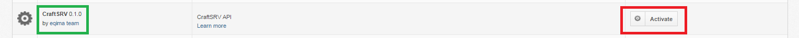
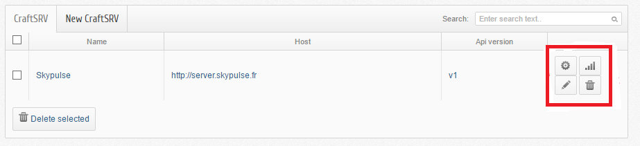
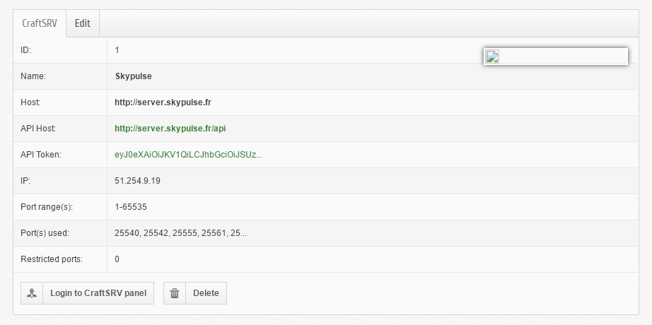
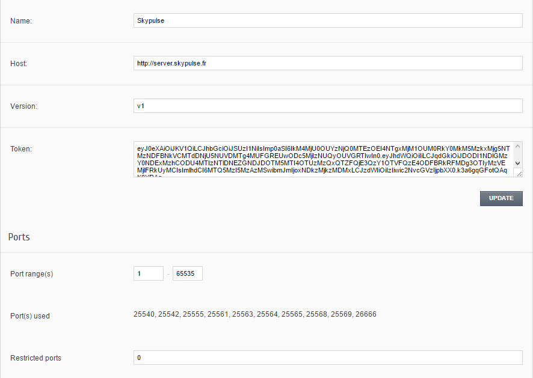

Manuel d’utilisation¶
Back office¶
Authentification¶
Pour s’authentifier il faut se rendre sur l’url : url_du_boxbilling/index.php?_url=/bb-admin.

Après vous logez avec votre adresse éléctronique et mot de passe en tant que admin.
Installation (serveur machine)¶
Dérouler le menu Extensions -> Overview puis il ne reste plus qu’à activer le CraftSRV 0.1.0 en cliquant sur Activate.
On sera rédiriger directement vers l’url : url_du_boxbilling/index.php?_url=/bb-admin/craftsrv. Et c’est ici que vous pouvez gérer votre serveur machine. Oui, mais comment?
Gestion des serveurs machines¶
Pour gérer ses serveurs, il faut aller dans l’onglet CraftSRV -> Overview. Et sur le coin à doite, on observe, respectivement le paneau de configuration du host (par exemple, ici le host est, skypulse), le bouton permettant de tester si on est connécté ou pas et finalement un bouton d’édition le tout illustrés sur la figure suivante (encadré en rouge).
La page d’édition¶
Lorsque vous cliquez sur le bouton éditer, vous aurez
Premièrement, on peut voir plein d’information apropos du serveur machine comme l’adresse IP du serveur à créer ainsi que les ports déjà ocuppés, pour ne citer que cela.
Aussi, c’est ici qu’on a la possibilité d’éditer le nom, l’hôte, la version , le token et les ports du serveur machine en question en allant dans l’onglet Edit comme nous montre la figure suivante.
Après modiffication souhaitée, cliquer sur UPDATE et tout sera enregistre avec ce que vous viens de modiffier.
Tout ceci est beau mais où est-ce qu’on peut créer ces serveurs?
Ajout des serveurs machines¶
Vous pouvez facilement ajouter une nouvrelle serveur machine ! Rendez vous dans le menu CraftSRV -> Overview après cliquer sur l’onglet New CraftSRV .
Un formulaire qui comprend 6 champs apparaît.

Completez les 4 premiers champs obligatoires avec :
- Le nom du serveur machine
- L’hôte du serveur lors de l” achat de celui-ci au GamePanelioAPI .
- La version de l’API courant qu’on peut voir ici .
- et le Token qui n’est autre que le jeton renvoyé par le serveur machine (comme skypulse par exemple).
et les 2 champs facultatifs avec :
- une plage de port
- les ports qu’on veut interdir (on les sépare par des virgules dans le cas où il y en a plusierus)
Cliquer sur le bouton CREATE et le servuer machine sera créer avec succès et on le trouve apparaît sur la liste des serveurs à cet url : url_du_boxbilling/index.php?_url=/bb-admin/craftsrv où on peut les configurer.